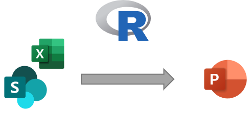
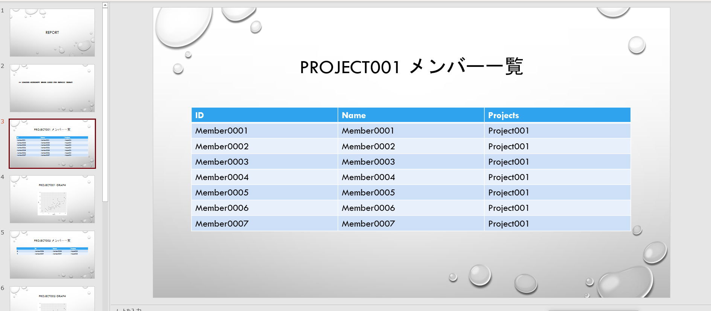

Microsoft365R で SharePoint 上のファイルをベースに自動レポートを作成する
概要
今年の2月ぐらいに、Microsoft365 上のファイルを R 言語で取り扱うためのライブラリ が発表された。 いままで、Sharepoint 上のファイルを R で取り扱うには、認証をくぐってファイルを取得するためのプロセスを自分で書いてやる必要があったが、晴れて公式ライブラリが発表されたので、遠慮なく使ってみる。
エクセルからレポート作成を試してみる
データドリブンが叫ばれる世の中とはいえ、まだまだビジネスアクションの起点はエクセルファイル、アウトプットはパワポ、である場面は多いので、SharePoint に配置されたエクセルファイルを簡単なコードでレポート化できる仕組みは結構需要がある。
今回は、SharePoint 上に配置された Excel のデータファイルを読み取って、RMarkdown で パワポ 形式レポートに出力し、かつ、結果を SharePoint 上に配布するのを、自動でやってみる。

環境
- R 4.1.0
- Windows10
事前準備
特定の R Project で、 Microsoft365R をインストールする。
install.packages("Microsoft365R")
動作確認
下記スクリプトを実行して、ファイルがダウンロードできることを確認する。
library("Microsoft365R")
# site_url = で SharePoint Site を指定する。
site <- get_sharepoint_site(site_url = "https://XXXX.sharepoint.com/sites/SiteName/")
# Drive を取得する
drv <- get_drive()
# Drive から Path を指定して、データをダウンロードする
drv$download_file("Directory/filename.xlsx", overwrite = TRUE)
get_sharepoint_site() を初回実行すると、URL と 認証コードが表示されるので、ブラウザーで URL を開き、認証コードを入力した後、権限の委任を実行する。
上記プロセスがうまくいき、かつ、Site へのアクセス権限があれば、ファイルがダウンロードできるようになる。
SharePoint サイトを指定するときの注意点として、 https から始まるサイトURL を用いてサイトを指定する場合は、 site_url = を明示的に指定してやらなければいけない。
こいつが厄介なことに、指定しない場合は、
関数 “make_basic_list” を見つけることができませんでした
という、いかにもライブラリのバージョン不整合っぽいメッセージが表示される。 そのため、パラーメータの指定が間違っているという本当の原因に気づきにくいのだが、パラメータを正確に指定すれば通るので、issue をあげる前に確認してみるといい。（あげかけた）
レポート作成
事前準備として、まず、Excel には下記のようなデータをあらかじめ挿入しておく。
Projects シート
| ID | Name |
|---|---|
| Project001 | プロジェクト１ |
| Project002 | プロジェクト２ |
| Project003 | プロジェクト３ |
Members シート
| ID | Name | Projects |
|---|---|---|
| Member0001 | Member0001 | Project001 |
| Member0002 | Member0002 | Project001 |
| Member0003 | Member0003 | Project001 |
| Member0004 | Member0004 | Project001 |
| Member0005 | Member0005 | Project001 |
| Member0006 | Member0006 | Project001 |
| Member0007 | Member0007 | Project001 |
| Member0008 | Member0008 | Project002 |
| Member0009 | Member0009 | Project002 |
| Member0010 | Member0010 | Project003 |
| Member0011 | Member0011 | Project003 |
| Member0012 | Member0012 | Project003 |
| Member0013 | Member0013 | Project003 |
| Member0014 | Member0014 | Project003 |
| Member0015 | Member0015 | Project003 |
| Member0016 | Member0016 | Project003 |
| Member0017 | Member0017 | Project003 |
| Member0018 | Member0018 | Project003 |
| Member0019 | Member0019 | Project003 |
| Member0020 | Member0020 | Project003 |
RMarkdown
続いて、 RMarkdown を使って、レポートを作成してみる。
RMarkdown のファイル（仮に、Report.Rmd とする）を下記のようにする。
---
title: "ProjectManagment"
output: powerpoint_presentation
---
```{r, echo=FALSE}
library(openxlsx)
library(ggplot2)
library(knitr)
```
```{r, results='asis', echo=FALSE}
projects <- read.xlsx("downloads/ProjectManage.xlsx", sheet = "Projects")
members <- read.xlsx("downloads/ProjectManage.xlsx", sheet = "Members")
for (project in projects$ID)
{
cat("\n\n# ", project, "メンバー一覧")
projectMember <- members[members$Projects == project, ]
print(kable(projectMember))
}
```
上記 Report.Rmd は、 downloads/ProjectManage.xlsx が存在している前提で動いているので、このままだとエラーになる。 環境を変えて実行した時や、複数人でコードを共有するときはやりにくい。
かといって、上記のエクセルファイルを Git で共有してしまうと、エンジニア以外がエクセルを編集するのが難しくなってしまう。
そこで、下記のような R スクリプト（仮に、BuildReport.r とする）で RMD を Wrap してあげる。
# ファイルのダウンロード
library(Microsoft365R)
sp <- get_sharepoint_site(site_url = "https://XXXXXX.sharepoint.com/sites/DataSample/")
drv <- sp$get_drive()
drv$download_file("Dimensions/ProjectManage.xlsx", overwrite = TRUE, dest = "downloads/ProjectManage.xlsx")
# レポートの作成
library(rmarkdown)
render("./Report.md")
# ファイルのアップロード
drv$upload_file("./Report.pptx", dest = "Reports/ProjectManage.pptx" )
上記を実行すると、SharePoint からエクセルをダウンロードして、下記のようなプロジェクトごとのメンバー一覧をパワポに出力することができる。

もちろん、SharePoint 上の Excel ファイルを更新した後（例えば、プロジェクトメンバーを移動させる等）、スクリプトを再実行してやれば、多少のタイムラグはあるものの、最新のデータを反映したレポートを再出力できる。 また、PowerAutomate で後続処理を書いてやれば、PJ メンバーに通知したり、再度レビューしてもらうことも可能になる。
週次でレポートを共有して報告する場合や、複数メンバーの報告事項をまとめてPPT で共有したい場合などには使えそう。
ちなみに、 PowerBI のような専用のツールを使えれば、見た目の調整を容易にできたり、レポート作成環境の構築が要らなかったりと、他のメリットも享受できるため、そちらを使えるに越したことはない。 ただ、親会社、子会社でファイルの共有が禁止されているなど、組織のRole 整備が運用環境に追いつけていないような状況だったり、複数パターンの予算を考えなければいけないような状況では効果を発揮しそう。
見た目の部分も、社内レポートレベルであればこれで十分なうえ、まだやったことはないが、RMD の出力フォーマットを整備すれば、きれいなレポートに成型することもできる（はず）。
あまり本質的ではないものの、同一フォーマットで数字を書き換えるだけの週次報告作業に追われてしまうような場面では使えそう。